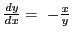

Next: Exercises Up: Differentials Previous: Derivative of the arc Contents Index
In the derivation which follows we shall employ the same figure and the same notation used in §6.7.

Solution. Differentiating, .
To find  in terms of
in terms of  we substitute in (9.6), giving
we substitute in (9.6), giving
Solution. Differentiating, .
Substituting in (9.10), gives
david joyner 2008-08-11